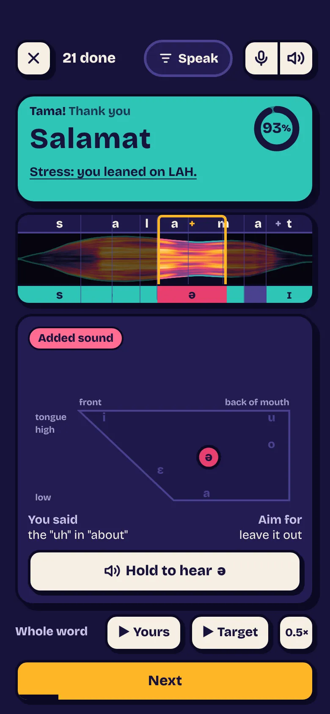
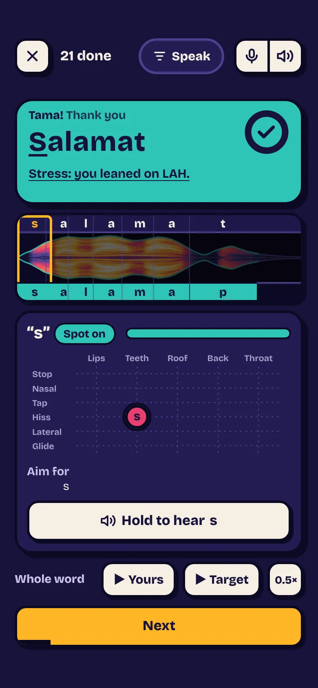

Free Tagalog practice for your phone
Learn Tagalog out loud.
Learn the Tagalog people actually speak. Say it out loud, and a coach on your phone tells you which sound to fix.
- Kumusta?How are you?
- Salamat poThank you (polite)
- Tara na!Let's go!

- Free. No ads, no tracking. No account to make. Your progress stays on your phone.
- No streaks, no points. Nothing to keep up and nothing to lose. Practise when it suits you.
- Nothing to install. It runs in your browser. Add it to your Home Screen if you like, and it works offline.
Bigkas · Pronunciation
A coach that hears every sound
Say a word and the app hears each sound you made, not just whether it caught the word. It shows what was right, what was close, and the one thing to fix.
The same word, "Salamat", said by two voices and judged by the coach. Tap to hear each one.

93%, a pass. But it hears an English "uh" slip in, and says to leave it out.

Full marks, with nothing to fix.
- On your phone. A speech model runs right in your browser, so your voice never leaves your phone.
- Sounds, not words. It writes down the sounds you made, then lines them up with the Tagalog one by one.
- Filipino ears. Everyday and regional ways of saying a sound count as right. Stress is measured from length, pitch and loudness.
Taglish · Real talk
Tagalog the way people really talk
Not textbook phrases. You learn what you'd hear in Manila: Taglish, po and opo, and the little words that carry a sentence. Nothing is left out for being blunt.
The everyday words were picked by how often they come up in Filipino film and TV, so the ones you learn first are the ones you'll hear most.
- Kuya, para po!Stop here please, driver!
- Grabe!Wow, that's intense!
- Ewan ko.Dunno.
- Ay naku!Oh no!
- Sayang!What a waste!
- Bahala na.Come what may.
Aral · Study
Built on how memory works
Each word comes back just before you'd forget it, and reading it, hearing it and saying it each get their own schedule. Miss one in Drills and it returns sooner:
- Next question
- After 1 other
- After 3
- After 6
The research behind it
Spreading reviews out beats cramming, across 317 experiments. Cepeda et al., 2006
Recalling a word fixes it far better than reading it again, shown with foreign-language vocabulary. Karpicke & Roediger, 2008
Tap the card to turn it over and see how well you know it.
Usapan · Chat
A conversation partner who knows what you know
Talk out loud whenever you like, with no one to feel shy in front of. Chat speaks English and swaps in the Tagalog you've learned, adding a new word now and then. Tap any word to hear it again.
Uses your own OpenAI key, about 5¢ a minute.

Iba pa · More ways in
Learn the thing, not the translation
Some words come back as a picture instead of the English. Phrases come back with one part swapped, so you learn the pattern, never with a word you haven't met.

You learned
Magkano ito?
How much is this?
- Magkano iyan?How much is that?
- Magkano ang kape?How much is the coffee?
Tara na!
Let's go. Open it on your phone and start. Add it to your Home Screen whenever you like.
Open Pinoy Prompt- Open it in Safari or Chrome on your phone.
- Tap Share, or the browser's menu.
- Choose Add to Home Screen.